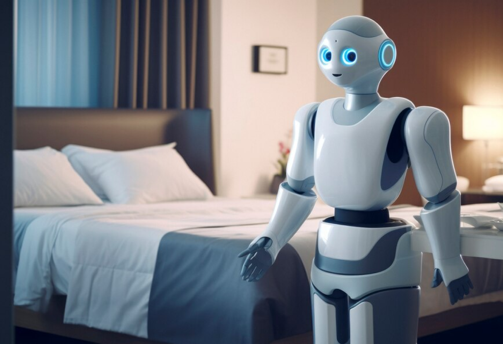
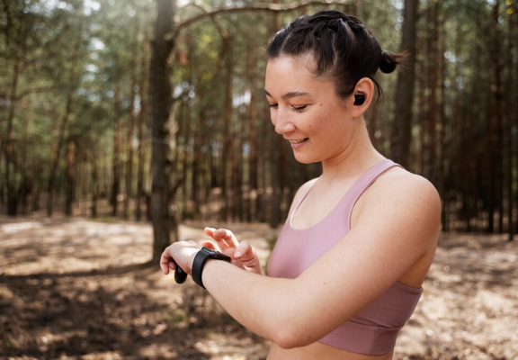

robótica
Robôs domésticos começam a ser adotados para tarefas diárias, prometendo mais conforto e eficiência nas residências.
hologramas
Novo Smartphone Projetor 3D chega ao mercado, transformando a forma como vemos nossas telas!
internet
Tecnologia 6G chega às metrópoles brasileiras, prometendo revolucionar a forma como vivemos e nos comunicamos.

vestíveis
Empresa lança relógio inteligente capaz de monitorar a saúde mental, oferecendo insights valiosos para o bem-estar pessoal.
realidade virtual
Escolas adotam a tecnologia VR para proporcionar experiências imersivas, transformando a aprendizagem tradicional.